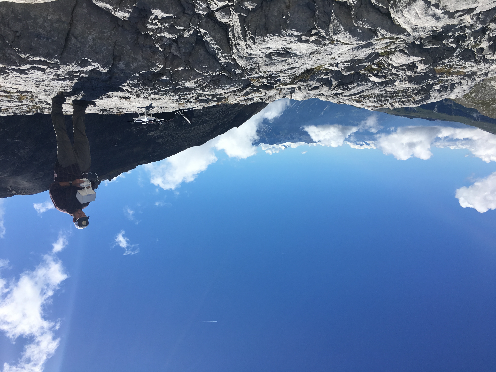

I visited several glacial forefields in Canton of Valais, Switzerland. I assisted Neal Iverson, Luke Zoet, Jake Woodard, and Christian Helanow with their collection of SFM data to create DEMs. Meanwhile, I measured striation orientations to interpret flow direction. If forefields had evidence of cavity formation between the ice and rock, I measured step height and cavity length to analyze the relationship between the two.
Our team was joined by Lauren Adamo, a PolarTrec teacher who shared our project via blogs and other outreach events.
PolarTrec Sliding Glaciers Expedition